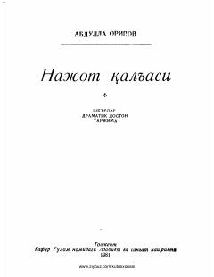

NQAbdulla Oripovning sara she'rlari va dramatik dostonlari jamlangan to'plam.
Mazkur kitob atoqli o'zbek shoiri Abdulla Oripovning turli yillarda yozilgan sara she'rlari va dramatik dostonlarini o'z ichiga oladi. Nashrda muallifning badiiy tarjimalari ham o'rin olgan bo'lib, chuqur falsafiy fikrlar va teran lirik kechinmalar bilan sug'orilgan.